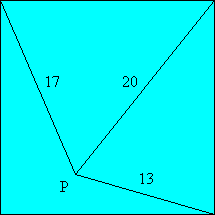

ABC is right angled at A. The angle bisector from A meets BC at D, so that DAB = 45°. If CD = 1 and BD = AD + 1, find the lengths of AC and AD.
ABC is right angled at A. The angle bisector from A meets BC at D, so that DAB = 45°. If CD = 1 and BD = AD + 1, find the lengths of AC and AD.
Hint - Answer - Solution
An ant, located in a square field, is 13 meters from one of the corner posts of the field, 17 meters from the corner post diagonally opposite that one, and 20 meters from a third corner post. Find the area of the field. Assume the land is flat.
Hint - Answer - Solution
| Nick Hobson nickh@qbyte.org |